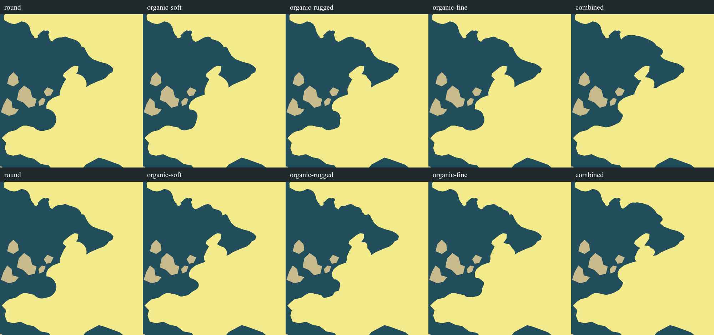
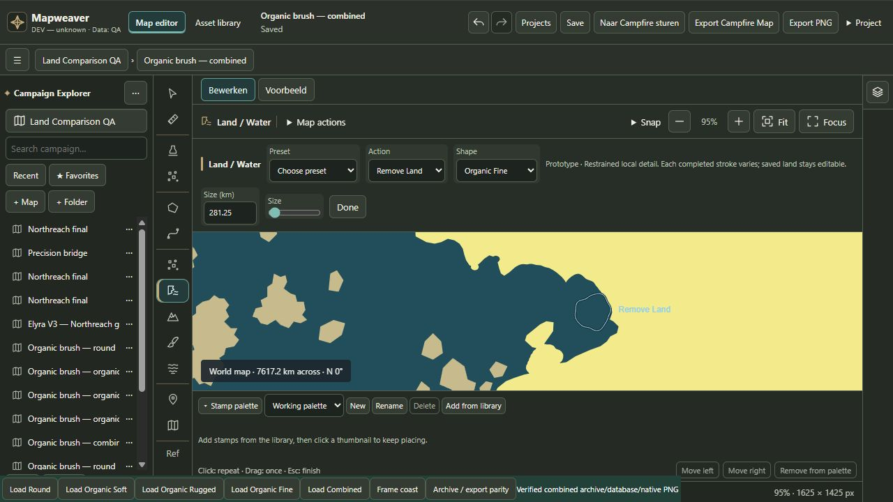

Organic Land Brush — refinement
Circular terminal lobes reduced; Fine now has visible local shoulders. Production status remains ADJUST. No merge. Same starting Northreach geometry, trajectories, sizes and seeds as the previous trial. Round's actual UI download is byte-identical to the old baseline. Combined has one extra operation and different sizes.
Report · Visual assessment · 106 passing tests and checks · Measurements · QA editor
Previous prototype (top) / refinement (bottom)

Crop-only sheets from actual native UI downloads. No repainted map imagery.
New full native exports / editable maps / actual editor
Actual Fine UI interaction

Undo/redo verified; the separate UI stroke was undone before final comparison parity verification. Primary Development, Campfire and previous proof are unchanged. No merge, push or package.